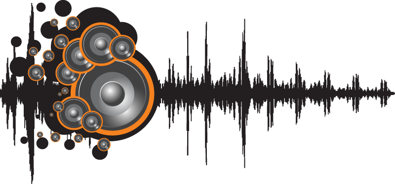

Los orígenes de Maná se remontan a un grupo musical llamado Sombrero Verde, cuyos integrantes Fher Olvera, como voz, Gustavo Orozco, a la guitarra eléctrica, y los hermanos Calleros, Juan, al bajo, Ulises, a la guitarra eléctrica y Abraham, a la batería, eran originarios de Guadalajara. En un inicio tocaban en bares. En 1980 decidieron juntarse para tocar distintos temas de grupos a los que admiraban, entre ellos The Beatles, Led Zeppelin, The Police, The Rolling Stones, entre otros. Inicialmente, se hacían llamar The Green Hat Spies, pero pronto el nombre se abrevió a Green Hat y, finalmente, se adaptó al español como Sombrero Verde, ya que la banda deseaba tocar rock en su propio idioma, siendo de los primeros grupos en aventurarse a componer sus propias canciones aún cuando el rock en español no era una tendencia
Desde la infancia la música fue su principal pasatiempo. A los 15 años comenzó su carrera en una banda de metal, llamada Ekhymosis, con la que publicó cinco álbumes logrando un buen reconocimiento en la escena rock de su país natal, Colombia. Cabe destacar que en 1999 tocó el bajo en algunas presentaciones con la banda Agony, en ese mismo año al disolverse Ekhymosis, Juanes decide lanzarse como solista y en el año 2000 debuta con el álbum Fíjate bien, logrando buenos conceptos de la crítica especializada. En 2002 ratifica la calidad de su trabajo con Un día normal, consiguiendo mayor notoriedad en el ámbito latinoamericano; en 2004 lanza el álbum Mi sangre, que se convierte en superventas internacional, logrando posicionarse bien en un gran número de países alrededor del mundo. A finales de 2007 saca a la luz pública La Vida... Es Un Ratico, con gran éxito. En 2010 pública P.A.R.C.E., considerado uno de sus álbumes más íntimos. En 2012 publica el álbum Juanes MTV Unplugged con tres canciones nuevas, "Todo En Mi Vida Eres Tú", "La Señal" y "Azul Sabina." En 2014 pública su álbum más reciente Loco De Amor.
Sus integrantes originales son Marciano Cantero, Felipe Staiti y Daniel Piccolo. Comenzaron con presentaciones en diferentes clubes, pasando luego a pequeños teatros no sólo de su provincia sino también de las vecinas, convirtiéndose en poco tiempo en la banda más popular y requerida de Mendoza y la zona de Cuyo. A principios de 1983 viajan a Buenos Aires a probar suerte, presentándose en clubes y bares. A principios de 1984 viajaron nuevamente a Buenos Aires para grabar un demo, con resultado inútil puesto que no se publica. Pese a este fracaso continúan realizando presentaciones en Mendoza y en la Capital Federal.